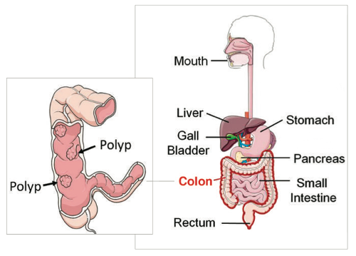

About Your Insides
Your digestive system - made up of your mouth, stomach, and colon - helps you absorb food. The last part, the colon, helps you absorb water and pass stool from your body.
Your colon, like other parts of your body, can get cancer. Nearly all colon cancers begin as non-cancerous polyps. A polyp is a small growth on the surface of your colon that can turn into cancer. Removing polyps may prevent you from getting colon cancer. If polyps have already become cancerous, catching them early increases your chance of being cured of colon cancer.
2/20